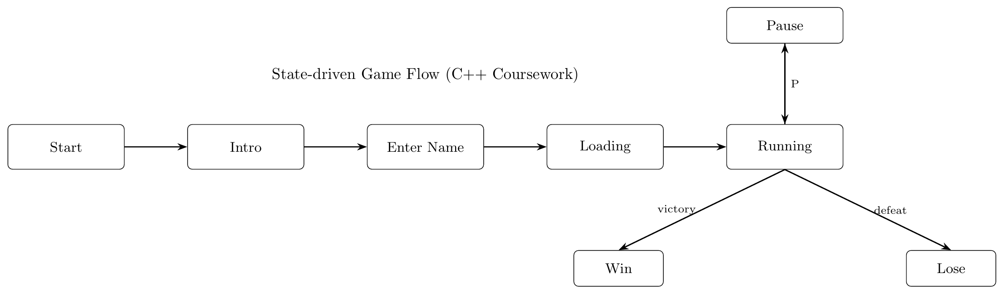

A 2D platform action game in which the player controls a skeleton hero who navigates a procedurally generated cemetery level, survives patrolling werewolves, and defeats a boss knight.
My Contributions
State-driven game flow: Implemented the full state system (Start, Intro, Name, Loading, Running, Pause, Win, Lose) with animated/changing backgrounds and UI transitions.
Procedural level & tiles: Built a tile/level system for a procedurally generated cemetery, including hazards and interactive tiles (fire damage, water slowdown, and a wizard tile that triggers rain to extinguish fires).
Player combat & classes: Implemented three playable skeleton classes (Normal, Archer, Warrior) with distinct movement/attacks, health display, and input controls.
Enemy & boss AI: Implemented werewolf enemies and the knight boss with behaviour-tree style logic, plus a companion pet dog entity and its AI behaviour.
Camera & persistence features: Added scrolling/zoom controls for the scene and implemented save/load (F5/F9) with gameplay-safe constraints.
Technical Breakdown
Architecture:
State-driven flow with dedicated screens for Start → Intro → Name → Loading → Running, plus Pause / Win / Lose.
The Running State hosts the core loop (combat, AI, tiles, progression) while UI and animated backgrounds are handled per-state.

World & Systems:
Procedurally generated cemetery level built with a tile manager. Tiles include hazards and interactions:
fire (damage), water (slow), and a wizard tile that triggers rain to extinguish fires. Collision uses a mix of solid box collision
and pixel-accurate checks where needed.
Player: three classes (Normal / Archer / Warrior) with distinct speed/attacks.
Enemies: werewolves + boss knight with behaviour-tree style logic.
Companion: pet dog entity with its own behaviour logic.
Interaction:
Keyboard + mouse controls for movement/combat, with camera/navigation tools for the scrolling/zoomable scene.
Movement: A/D walk, Shift+A/D run, W jump, S crouch.
Combat: Left click Attack 1, Right click Attack 2; 1/2/3 to switch class.
Game flow: P to pause; F5 save and F9 load (save-before-load constraint).
Managed the project as a sequence of small milestones aligned with the coursework requirements.
I iterated feature-by-feature (core loop → states/UI → procedural level → AI/combat → save/load),
keeping each milestone playable before moving on. Each iteration ended with quick regression checks
to avoid breaking state transitions and gameplay flow.
Milestone planning: Broke the build into deliverable checkpoints—state system and UI flow,
then procedural cemetery generation, then enemy/boss behaviours and combat tuning, and finally polish
(camera scroll/zoom, balance, bug fixes).
Risk-first implementation: Prioritised high-risk systems early (procedural generation and
state transitions) so issues surfaced quickly. Later features (extra classes, pet AI, visual polish) were
layered on once the core loop was stable.
Testing & iteration: Used frequent playtesting and focused test cases for edge conditions
(e.g., save/load safety, collision boundaries, AI spawn timing). Iterated based on observed pain points,
especially early difficulty spikes and control clarity.
Results
Delivered a playable C++ 2D platform action game where the player controls a skeleton hero navigating a procedurally
generated cemetery, surviving patrolling werewolves, and defeating a knight boss. The build includes a complete
gameplay loop (exploration → combat → progression → boss fight) and a state-driven UI flow.
What shipped
Full state flow: Start/Intro/Name/Loading/Running + Pause/Win/Lose.
Procedural cemetery generation with interactive tiles and hazards.
Three playable classes (Normal/Archer/Warrior) with distinct attacks.
Engineering highlights
Enemy + boss AI logic (patrol/chase/attack decision flow).
Save/Load support (F5/F9) with safe constraints to prevent invalid restores.
Camera tools: scrolling and zooming with boundary handling.
Evaluation
Validated via iterative in-house playtesting and systematic feature checks across states, combat, AI behaviours,
and procedural generation. Focus areas were stability (no soft-locks), readability of controls, and fairness of
difficulty progression.
Test coverage
State transitions: consistent entry/exit, pause/resume, win/lose handling.
Each project page follows the same structure:
TL;DR → demo → my role → tech breakdown → Project Management → Result & Evaluation.
That consistency helps reviewers compare quickly.